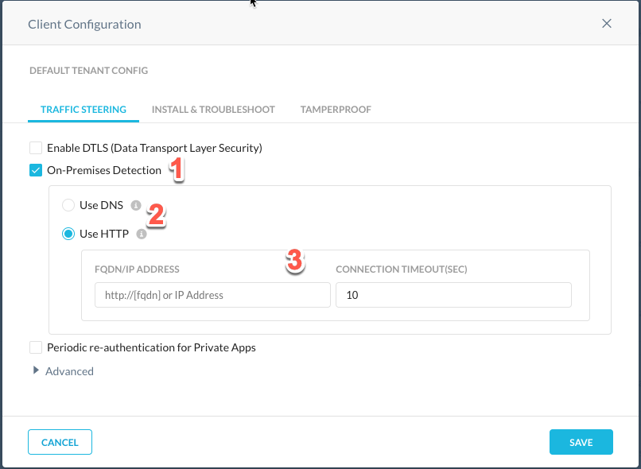
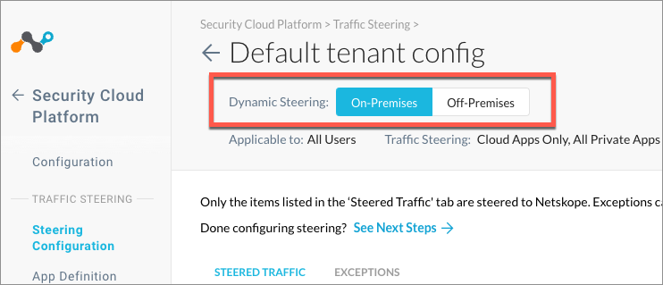
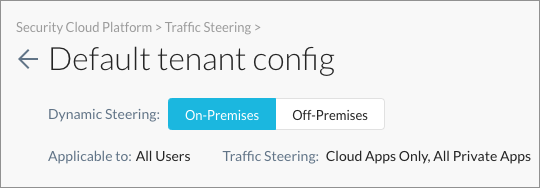
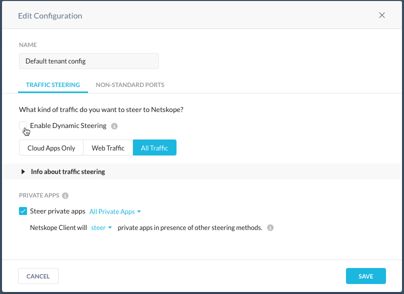
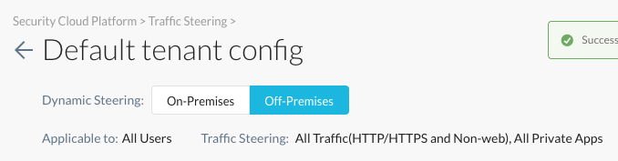

Dynamic Steering
Dynamic steering enables location-based steering capabilities, viz on-prem or off-prem. Depending on the location, you can set up the steering configuration to steer or bypass configured traffic. When a managed device is detected to be on-premises, only cloud applications are steered and when the device is detected to be off-premises, all web traffic is steered. Dynamic steering also extends the capability to steer traffic from all or specific private applications.
Consider the scenario, where ACME Inc uses a firewall in their on-prem network to manage web traffic. They do not prefer to change this setup and use Netskope to steer cloud traffic. However, for off-prem users, they configure Netskope to steer both cloud and web traffic. In such a scenario dynamic steering can detect user location and use appropriate steering modes.
Prerequisites
On-premises detection must be enabled to configure dynamic steering.
To learn more about on-prem detection, see Netskope Client Configuration.
To learn more about steering configuration, see Steering Configuration.
Default Settings for Dynamic Steering
The following are the supported steering modes when a managed device is on-premises or off-premises.
On-Premises Steering Modes
When the managed device is on-premises, you can set up steering configuration to steer either web or cloud traffic
Traffic Mode | Steering Exceptions |
|---|---|
Cloud (default) | The cloud application exceptions are bypassed by the Netskope Cloud. |
Web | All exceptions are bypassed by the Netskope Cloud. NoteContact Netskope Support to enable web mode for on-prem. |
Off-Premises Steering Modes
When the managed device is off-premises, the below traffic mode is steered by the client.
Traffic Mode | Steering Exceptions |
|---|---|
Web | All exceptions are bypassed locally by the Client. |
All Traffic (Cloud Firewall) | All exceptions are bypassed locally by the Client. |
Enabling Dynamic Steering Configuration
Before you begin configuring dynamic steering options, you must enable on-premises detection.
Enabling On-Premises Detection
In your tenant, go to Settings > Security Cloud Platform > click Devices under Netskope Client.
If you are using an existing client configuration, select the configuration from the list and enable the On-Premises Detection option.
1 - Enable On-Premises Detection Option
2 - Select location detection method: DNS or HTTP.
For HTTP, the HTTP server must return
200 OKresponse code to determine if the device is on-premises. Also enter a connection timeout value. The default is 10 seconds, and the max is 60 seconds.For DNS, If the FQDN entered resolves to the provided IP Address, the device is considered to be on-premises. Please make sure this is a valid DNS record that is resolvable only within your network.
3 - Specify the endpoint address.
Configuring Dynamic Steering Options
In the tenant, go to Settings > Security Cloud Platform > click Steering Configuration under Traffic Steering.
You can either make changes to an existing steering configuration or create a new one. The following steps illustrate modifying an existing configuration (Default Tenant Config).
Note
Irrespective of the user location all exceptions types are supported. However, when using the Destination Location (with public IP address only) exception type, select the Treat like local IP address option.
If dynamic steering is not configured for on-prem, then all exceptions (if configured) for off-prem will be bypassed by Netskope Cloud when the managed device in on-prem
When configuring on-prem or off-prem you have the option to enable traffic steering for all or specific private applications.
To learn more about steering configuration and exception types , see Steering Configuration and Exceptions.
Select On-Premises or Off-Premises tab. The steering options will be applied accordingly as per the selected device location.
On-Premises Configuration
On the steering configuration page, select the On-Premises tab and click the Edit button to modify the configuration.
In the Edit Configuration pop-up window, choose the traffic mode (Cloud Apps Only, Web Traffic, and All Traffic) and select the Enable Dynamic Steering option. Click Save to apply the changes.

The configuration page displays the configured steering modes.

Off-Premises Configurations
On the steering configuration page, select the Off-Premises tab and click the Edit button to modify the configuration.
In the Edit Configuration pop-up window, choose the traffic mode and select the Enable Dynamic Steering option. Click Save to apply the changes.
The steering configuration page displays the configured steering modes.
